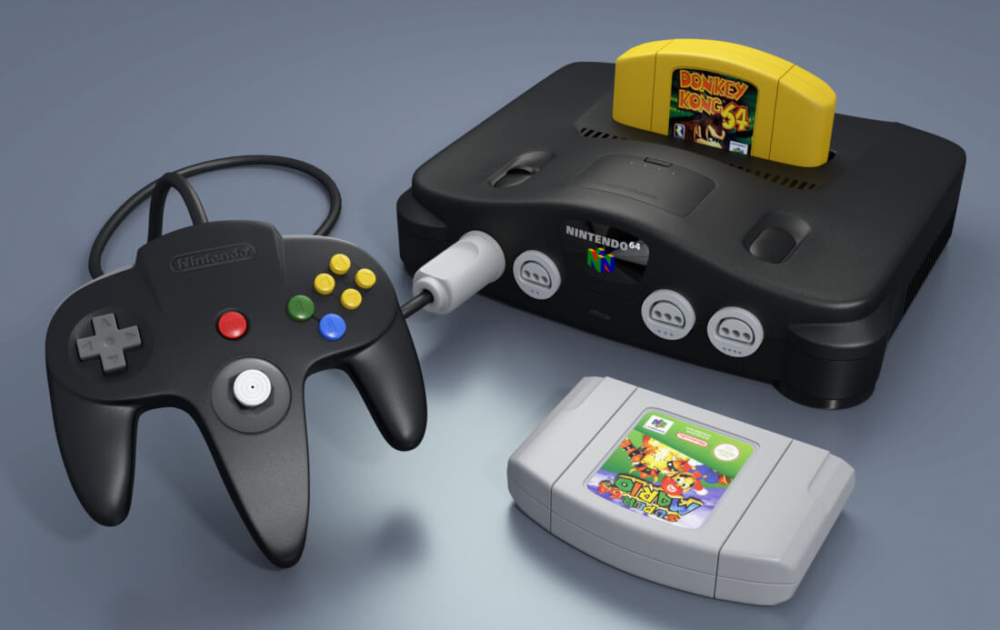
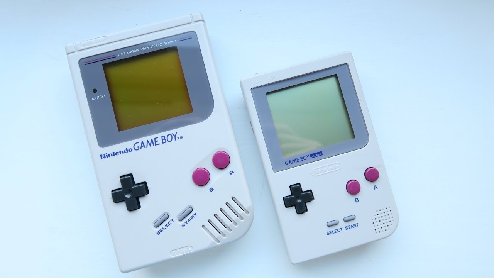

> Nintendo 64 llega al mercado después de varios retrasos
(con la consecuente cancelación de varios juegos) en Junio de 1996
a tierras niponas y meses más tarde a Estados Unidos. Europa la recibió en 1997.
Dentro de esta consola podíamos encontrar muchas innovaciones en la época como
por ejemplo la vibración (Con el Rumble Pack).
Dentro de su catálogo podemos destacar: Super Mario 64,
The Legend of Zelda: Ocarina of Time,
GoldenEye 007,
Perfect Dark,
Mario Kart 64,
Donkey Kong 64,
Banjo-Kazooie,
Super Smash Bros, o
F-Zero X.
<

>
Se presenta la Game Boy Pocket, una versión más pequeña que la Game Boy original.
Poseía un verdadero display en blanco y negro, que mejoraba bastante el visionado
de los juegos y la pantalla era más grande que la de su antecesora.
<
> Nintendo nos presenta durante este año, junto a la llegada de Nintendo 64 el primer plataformas en 3D: Super Mario 64. Todo esto suponía un cambio de planteamiento en la manera de jugar pero el juego contaba con una gran calidad visual para la época y un excelente control.
<
>
Surge el primer Resident Evil. Si con Alone in the Dark apareció el survival horror en el mundo de los videojuegos, hay que decir que, con la llegada de Resident Evil, este género se reinventó.
Llegó de las manos de Capcom a la consola PlayStation en 1996, aunque más tardé fue portado a varias plataformas.
<
>
A finales de año también hacía su gran aparición en PlaystationCrash Bandicoot. De la mano de Naughty Dog, surgía este revolucionario plataformas en 3D que nos ofrecía las aventuras de un marsupial mutado por el doctor psicópata Neo Cortex, en su periplo por arruinar los planes para dominar el mundo del mismo.
Crash Bandicoot nació, según afirman sus creadores, con la idea de ser la mascota representativa de Sony, como competencia frente a otros personajes de la época: Mario de Nintendo y Sonic de SEGA.
Sin embargo la marca nipona nunca lo llegó a reconocer como tal.
<